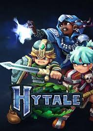

Hytale — Un juego de aventura y construcción en un mundo abierto
Hytale es un juego de aventura y sandbox ambientado en un vasto mundo generado de forma procedural, desarrollado por Hypixel Studios. Combina exploración, construcción, rol y acción en un universo lleno de biomas variados, criaturas mágicas, mazmorras y secretos por descubrir. A diferencia de los juegos puramente creativos, Hytale ofrece una narrativa, progresión de personaje y combates más profundos dentro de un entorno totalmente modificable.
🛡️ Modo Campaña (Historia) 🛡️
Embárcate en un viaje épico a través del mundo de Orbis, donde te enfrentarás a fuerzas oscuras, ayudarás a aldeanos, descubrirás ruinas antiguas y avanzarás en una historia llena de fantasía. Recolecta recursos, fabrica armas y armaduras, derrota jefes y desbloquea nuevas zonas mientras construyes tu propia leyenda. ⚔️ PvP ⚔️
⚔️ PvP — Batallas Competitivas ⚔️
Hytale incorpora batallas en tiempo real contra criaturas como dragones, monstruos elementales y ejércitos enemigos. Podrás mejorar tu equipo, usar magia, habilidades especiales y diferentes estilos de lucha para adaptarte a cada desafío, haciendo que el combate sea estratégico y emocionante.
🏗️ Creatividad, Mods y Contenido Personalizado 🏗️
Además del modo aventura, el juego ofrece potentes herramientas de construcción y modificación. Los jugadores pueden crear mapas, minijuegos, historias personalizadas y servidores completos, lo que convierte a Hytale en una plataforma infinita de experiencias creadas por la comunidad.
🕹️ LINK PARA COMPRAR EL JUEGO 🕹️